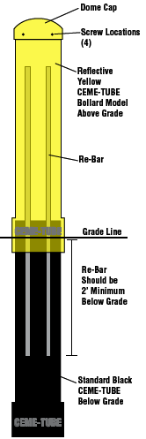

| {% include sidebar.html %} |
|
 |


- A standard black CEME-TUBE™ must be used
below grade to provide strength and frost
resistance.
- Slide Bollard CEME-TUBE™ onto standard
black CEME-TUBE™ and fasten together with screws in collar
area. (screws not provided)
- A minimum of 4 pieces of No. 5 (5/8") or 3 pieces
of No.6 (3/4”) rebar should be used inside
the CEME-TUBE™ Bollard for additional strength.
NOTE: 4
Pieces of No. 6 (3/4") rebar in
the CEME-TUBE™ Bollard will equal the
strength of a 5" Schedule 40 pipe filled with
concrete. If more strength is needed,
add more rebar.
- Re-bar should extend at least 2' below
the level of grade. (On a standard 4' above grade
bollard, a 20' piece of re-bar cut into 3 equal pieces
will provide 3' of support below grade and 3-1/2' above
grade.
- If using
multiple CEME-TUBE™ Bollard forms in one area, the tops
can be trimmed down after setting, and before filling to
match heights with each other.
- Fill Bollard with concrete to within 12" of top,
slide rebar down into concrete, then finish filling with concrete to top.
-
Before concrete hardens, attach domed lid with
provided stainless steel screws in dimpled areas of dome cap.
- Clean off any concrete residue from outside of
Bollard CEME-TUBE™.
- Installation is complete.
|
|
 |
 |
|
 |